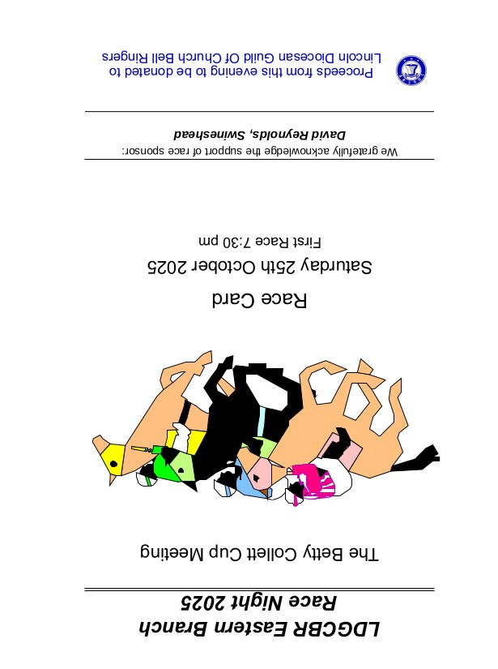
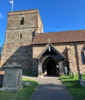
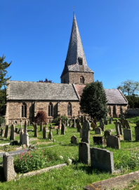
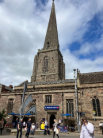
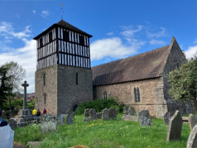
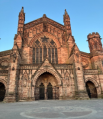

Race-Night Fund-Raising Event - Alford - 25 Oct 25
On the evening of Saturday 25 October, around 40 inveterate gamblers gathered at Alford Church Hall for the Eastern Branch's fund-raising event in support of the Guild. Once again the event was a Race Night, the 'Betty Collett Cup Meeting'.

There was a full race card of 9 races, each race having 8 horses. All of the horses in the first 8 races had been pre-sold to owners from throughout the Guild for the very modest sum of £2-50 each!
Thanks go to all our owners, and to our race sponsors.
The winners of the first eight races and their owners were:
1. War - Shirley Ford
2. Key Lime Pie - David Reynolds
3. Bernie Bubbles - Judy Lumb
4. Welsh Dragon - Christine Higginson
5. King Kiwi - Daniel Willoughby
6. Ludborough Lolloper - Charles Macrorie
7. Susan Constant - Ian Evans
8. The Coningsby Typhoon - Coningsby Ringers
The Betty Collett Cup
The last race of the night was the 'Betty Collett Cup'. This was a race-off between the winning horses from the previous eight races.
The winner of this race was 'Susan Constant', owned by Ian Evans, so he will be the proud holder of the Betty Collett Memorial Cup for the next 12 months.
At the halfway point in the proceedings there was a welcome break for a supper of lasagne followed by a crumble and custard, produced by Caitlin Meyer ably assisted by her team of helpers. Thanks also go to Mary and Richard Willoughby for the table settings who announced their retirement from active involvement and received a gift in recognition of their many years of support.

The raffle provided more fun and prizes, raising £130.00, and our thanks go to all who donated prizes.
Overall, including the raffle, we raised over £817.70 for the Guild's Training and Recruitment Fund. Our thanks go to all who participated in any way in the evening.
Phil Ford
Eastern Branch Hereford Tour - 3-4 May 2025
On an unbelievable warm and sunny Saturday (especially considering it was a Bank Holiday weekend), 12 LDGCBR members and a former member, Bruce, visited 5 churches in the Hereford area, arranged by Bruce, who is now resident in the area and Colin. Hereford is surrounded by the Malvern hills, boasts interesting architecture and the River Wye flows from its source in Wales through the City under the Victoria Bridge, built to celebrate Queen Victoria's diamond jubilee.

First tower Church was St Georges, Woolhope; a small village situated about 20 minutes outside central Hereford. A nice ground floor ring of 6 bells, which went well once we got used to the fact that it was an anticlockwise ring. There was a mixture of ringing in keeping with the experience of the ringers present.
There was a slight delay for one car of ringers en route to the second tower due to circumstances involving a tight leafy country lane (very picturesque) and a lady unable to find her reverse gear… resulting in approximately 7 cars (including one full of ringers) and a horse having to reverse quite a way!

Second tower St Marys Fownhope; again a pretty village just outside of Hereford. A very large, airy ringing chamber with 6 bells. The bells went very well and again there was a mixture of ringing ranging from call changes to a plain course of Cambridge. Not quite sure why there was a very old hand pushed funeral bier in the chamber (or even how they got it up there) but it made for an interesting conversation piece.
En route back into Hereford for the third tower a definite 'first' was witnessed when a ringer's cars was overtaken by a rabbit on a motorbike! The driver later explained that the rabbit then had to pull over either in shock or perhaps it was having the same issues with the satnav that some of the ringers were experiencing. The above notwithstanding all ringers found parking and made it to the third tower in the centre of Hereford.

Third tower All Saints Hereford; Situated in central Hereford, its twisted spire has dominated the skyline of Hereford for over 800 years. It seems that the tower and spire had always leant over (until the straightening of the 1990s), because the builders did not realise until it was too late that they were laying their foundations of one side very close to one or more rubbish pits. In later years the spire was given a further twist at the top, as metal fixing for the stones rusted badly and pushed the stones out of place. The Church is now a community hub with on site café, meeting rooms and is a place where people of all faiths and beliefs are welcome to pray and worship.<
The ring of 8 bells were medium to heavy; pleasant to ring and sang out over the City. The Tower Captain John joined us and an exceptional touch of Grandsire Triples was rung, along with various other methods.
The itinerary allowed for a break of 2 hours for lunch and a wander around Hereford. Ringers dispersed for lunch at the many eateries on offer or to find a quiet spot outside the City for a well catered picnic in the sun.

Fourth tower St Batholomew Holmer; St Bartholomew's Church has a 13th Century detached tower which was thought to be intended for defence purposes against the Welsh. The tower is topped with a black and white 16th century timber belfry. Some of the six bells are the oldest in Herefordshire.
Ground floor ring of 6, with the added bonus of a TV screen showing the bells moving above the ringing chamber as they were being rung.

Fifth tower St Mary the Virgin Burghill; The present tower was built in 1812. The tower has a ring of 8 bells, 5 of which were cast by Abraham Rudhall of Gloucester in 1704 and were augmented by 3 further bells in 1894 cast at the Whitechapel Foundry. The Church also has links to William Wordworth and Sir Edward Elgar.
The ringing chamber was large and airy, which was very welcome as the temperature had been rising all afternoon. Again, a mixture of ringing was rung and everyone enjoyed the final ring of the day.
Throughout the day all wardens and ringers that we met were friendly and accommodating. Various offers of service ringing for Sunday were made and taken up. Thanks were expressed to Bruce and Colin before the group disbanded to their various accommodation or travels.
As an aside, on Sunday morning, whilst 4 ringers were waiting for the car to charge in central Hereford, they decided to get coffee and listen to the Cathedral ring. As they stood in the Cathedral courtyard, talking 'bells' a gentleman came up behind them, realised they were part of the Lincolnshire ringing party from Saturday and persuaded them to ring for their Sunday service - they grabbed the Cathedral!!!
Also, on the way down some ringers stopped off to ring a QP at Cubbington with ringers known by one ringer who used to ring with Coventry DG
Tess Rowland